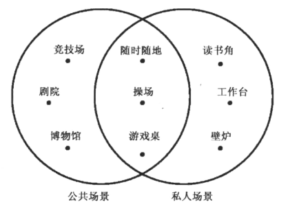

第3章 体验发生于场景
流沙般的平台
我们一再犯的错误就是只关注现在的技术，忘记了专注于生活中熟悉的事物：我们把生活中使用这些技术的地方称之为场景。
在思考哪一种玩法在哪个场景下最合适及其原因时，以下的系统很有用。

私人场景
炉边
炉边游戏，指像人类在壁炉边能感受到平静和安全一样，如果能让大脑觉得数个小时连续盯着一个炉边游戏感到平静和享受的话，你就成功了。
例如 电视游戏 主机游戏
工作台
一个用于解决疑难问题的私密空间称作“工作台”。这些地方更加孤独、安静甚至凌乱。
工作台游戏难度更高而且更紧张，玩一次需要持续数小时。
例如 电脑游戏 魔兽世界 steam
读书角
书是可移动的————我们能够在任何地方阅读，但我们更倾向于某些特定的地方。典型的读书角是在卧室或者家中任何一个有椅子或沙发并且远离电视的房间。
例如 iPad游戏
公共场合
剧场
剧场的特点是：大量的人聚集在一起，共同见证某些事件。当许多人专注于一系列事件的发生时，就会出现一些魔法般的力量。
竞技场
竞技场庞大且都在公共场合，输赢并不保密。
例如 多人FPS游戏 竞技直播
博物馆
越来越多的博物馆会包含一些游戏体验，把它作为一种给游客介绍藏品的方式。
例如 街机游戏室
半公开/半私人场景
游戏桌
操场
任何孩子聚集起来玩耍的地方，比如后院、街道、空地或者树洞，都是一种操场。
随时随地
场景之间的混合与搭配
3号透镜：场景
问你自己这几个问题：
- 我想要制作的游戏最适合哪种场景？
- 我的场景中是否有一些特殊的属性会影响到我的游戏？
- 我的游戏中有哪些元素能够与场景和谐共处？哪些元素不行？